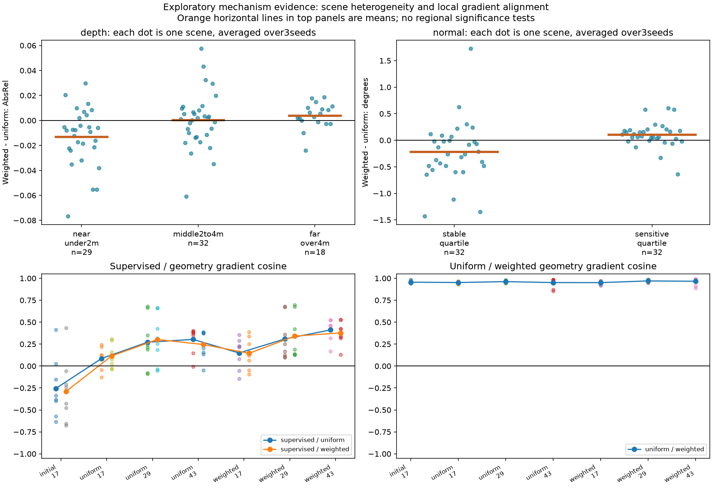
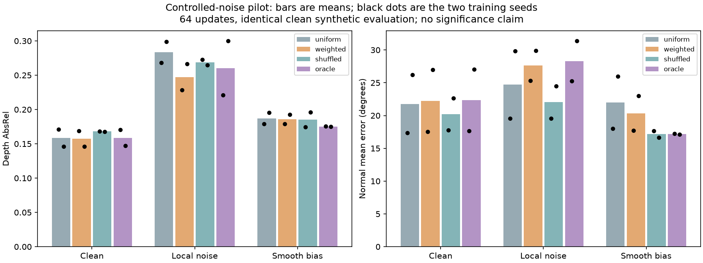

All three requested studies are completed. The frozen quantitative record is in the main report. This page adds descriptive synthesis and preprocessing checks; it does not add hypothesis tests or select new training settings.
Relative to uniform geometry, the V9 weighted model's depth gain is concentrated in the under2m bin: mean AbsRel difference -0.01322 over29 eligible scenes; the2–4m bin is near zero (+0.00025 over32), and the4m-plus bin is worse on average (+0.00382 over18). Normal error improves in the stable label-sensitivity quartile (-0.21724 degrees) but worsens in the sensitive quartile (+0.10437 degrees). These are retrospective region associations on observed development data, not causal explanations or new significant findings.

Across the six trained states, mean coefficient-scaled geometry-gradient norms are roughly39–59% of the supervised-gradient norm. This rules out a negligible geometry gradient on the sampled probes, not in all training steps. The mean uniform/weighted gradient cosine across all56 probes is 0.9579. Similar directions offer a plausible explanation for limited model differences, but do not establish causation.
Initial supervised/geometry gradients are negatively aligned on average; the trained-state means are positive. This suggests testing delayed geometry regularization as a future hypothesis. It does not prove that a warm-up schedule will help. The56 probes use only four fixed training images and two noise draws per state. The one BF16 precision flag and its FP32 reference are retained in the main report.
| Condition | Normal error: full → native degrees | Depth error: full → native AbsRel | Depth latent MSE vs clean | Normal latent MSE vs clean |
|---|---|---|---|---|
| clean | 0.01 → 0.01 | 0.000% → 0.000% | 0.00000 | 0.00000 |
| heterogeneous_noise | 32.11 → 22.27 | 0.670% → 0.178% | 0.01326 | 1.24721 |
| smooth_bias | 5.39 → 5.39 | 2.501% → 2.504% | 0.01346 | 0.01555 |
Native resolution is192×256. Latent MSE is a representation-space distance to the clean encoded target, not an angular error or metric depth error. Random depth noise is attenuated by resize; normal-label noise remains substantial. Smooth bias largely survives resizing. These measurements help interpret the intervention; they do not estimate real NYUv2 label noise.

Each difference below is rule minus uniform on the same clean evaluation images, averaged across two seed-matched runs. Negative favors the rule. The last column subtracts the corresponding clean-training difference. This post-hoc difference-in-differences description separates a noise-specific change from a clean-condition difference; it has no significance test and does not establish an interaction.
| Training labels | Rule | Task | Mean difference | Seeds improving | Difference vs clean effect |
|---|---|---|---|---|---|
| clean | weighted | depth | -0.00113 | 2/2 | +0.00000 |
| clean | weighted | normal | +0.48446 | 0/2 | +0.00000 |
| clean | shuffled | depth | +0.00958 | 1/2 | +0.00000 |
| clean | shuffled | normal | -1.55723 | 1/2 | +0.00000 |
| clean | oracle | depth | +0.00028 | 1/2 | +0.00000 |
| clean | oracle | normal | +0.59262 | 0/2 | +0.00000 |
| heterogeneous_noise | weighted | depth | -0.03608 | 2/2 | -0.03495 |
| heterogeneous_noise | weighted | normal | +2.91229 | 0/2 | +2.42783 |
| heterogeneous_noise | shuffled | depth | -0.01460 | 1/2 | -0.02418 |
| heterogeneous_noise | shuffled | normal | -2.67354 | 2/2 | -1.11630 |
| heterogeneous_noise | oracle | depth | -0.02306 | 1/2 | -0.02334 |
| heterogeneous_noise | oracle | normal | +3.58894 | 0/2 | +2.99632 |
| smooth_bias | weighted | depth | -0.00130 | 2/2 | -0.00017 |
| smooth_bias | weighted | normal | -1.63052 | 2/2 | -2.11498 |
| smooth_bias | shuffled | depth | -0.00196 | 1/2 | -0.01154 |
| smooth_bias | shuffled | normal | -4.82336 | 2/2 | -3.26613 |
| smooth_bias | oracle | depth | -0.01188 | 2/2 | -0.01216 |
| smooth_bias | oracle | normal | -4.79233 | 2/2 | -5.38494 |
If the noisy-label oracle helps consistently while the proxy does not, improve the reliability estimate. If neither helps, first inspect optimization and the fact that only geometric consistency is weighted: corrupted latent supervision is still unweighted. An oracle null result does not prove weighting is useless.
If depth improves while normals worsen, one testable explanation is that the same scalar weight protects depth from unreliable normals but also weakens useful depth-to-normal guidance. The current experiment does not isolate these directions. A new comparison could stop the gradient through one predicted branch at a time, alongside the unchanged bidirectional control. Shared LoRA parameters still couple future outputs even when one branch is detached, so both tasks must be evaluated. This is a proposed experiment, not a demonstrated fix or a novelty claim.
Direct normal-supervision weighting and delayed geometry are other untested alternatives. Do not extend the64-step pilot until a preferred p-value appears. Any larger study needs a new recorded protocol with a justified budget, more training seeds/draws and genuinely independent scene groups. This study has simplified synthetic RGB, two training seeds and shared generator families; it cannot establish real-world transfer or convergence.
Paired descriptive effects | Preprocessing measurements | Input audit | Full quantitative report